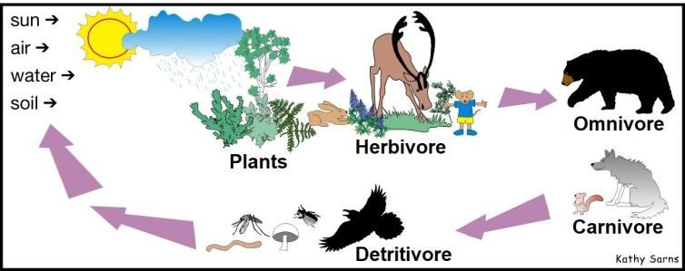

The above verses describe two visions of the Prophet: In the first vision, described in the initial paragraph, the Prophet saw seven angels preparing to punish a Great Prostitute seated on a vast body of water. According to experts in Bible prophecy, a 'Woman' symbolizes a 'Priestly System,' so the 'Great Prostitute' likely represents a 'Corrupted Priestly System.' This system promotes concepts that lead to the legalization of gay marriage, the encouragement of dating culture and free sex, and the teaching of the theory of biological evolution to children, who may interpret it as fact. In the second vision, described in the second paragraph, the Prophet saw a Woman who is the Mother of the Prostitute. This Mother, representing a Priestly System, preached the concept of 'All is Forgiven,' thereby corrupting her daughters. In the vision, the Woman, identified as the Mother of all Prostitutes, was dressed in purple and scarlet, which suggests she represents the Vatican, as Bishops and Cardinals wear purple and scarlet robes. FIGURE.6.11: Dress of Bishops and Cardinals
উপরের আয়াতগুলি নবীর দুটি দর্শন বর্ণনা করে: প্রথম দর্শনে, প্রাথমিক অনুচ্ছেদে বর্ণিত, নবী সাতজন ফেরেশতাকে একটি বিশাল জলের উপর উপবিষ্ট একটি মহান পতিতাকে শাস্তি দেওয়ার প্রস্তুতি নিচ্ছেন। বাইবেলের ভবিষ্যদ্বাণীর বিশেষজ্ঞদের মতে, একজন 'নারী' একটি 'পুরোহিত ব্যবস্থা'কে প্রতীকী করে, তাই 'মহান বেশ্যা' সম্ভবত 'দুষিত পুরোহিত ব্যবস্থা'কে প্রতিনিধিত্ব করে। এই সিস্টেমটি এমন ধারণাগুলিকে প্রচার করে যা সমকামী বিবাহের বৈধকরণ, ডেটিং সংস্কৃতি এবং অবাধ যৌনতাকে উৎসাহিত করে এবং শিশুদের জৈবিক বিবর্তনের তত্ত্বের শিক্ষা দেয়, যারা এটিকে বাস্তব হিসাবে ব্যাখ্যা করতে পারে। দ্বিতীয় দর্শনে, দ্বিতীয় অনুচ্ছেদে বর্ণিত, নবী একজন মহিলাকে দেখেছিলেন যিনি বেশ্যার মা। এই মা, যাজকতন্ত্রের প্রতিনিধিত্ব করে, 'সবই ক্ষমা করা হয়' ধারণা প্রচার করেছিলেন, যার ফলে তার কন্যাদের কলুষিত হয়েছিল। দর্শনে, মহিলা, সমস্ত পতিতাদের মা হিসাবে চিহ্নিত, বেগুনি এবং লাল রঙের পোশাক পরেছিলেন, যা পরামর্শ দেয় যে তিনি ভ্যাটিকানকে প্রতিনিধিত্ব করেন, কারণ বিশপ এবং কার্ডিনালরা বেগুনি এবং লাল রঙের পোশাক পরেন। চিত্র.6.11: বিশপ এবং কার্ডিনালদের পোশাক
Therefore ―Mystery Babylon the Great‖ or ―Babylon the Great is ―Vatican / Rome‖. It is not the ancient Babylon of Mesopotamia / Iraq. In Holy Bible, there are several Books of Prophecy. The Book of Revelation is the last. It is a Book of the New Testament. So, confusion about the time is less in the Revelation. Jesus foresaw that the people living around ancient Babylon would abandon Paganism and embrace Islam. He also foresaw that they would rule from the general area of Babylon, including Kufa and Baghdad. He sent his good wishes for them through his companion, as narrated in the following verse:
তাই ‘মিস্ট্রি ব্যাবিলন দ্য গ্রেট’ বা ‘গ্রেট ব্যাবিলন’ হল ‘ভ্যাটিকান/রোম’। এটি মেসোপটেমিয়া/ইরাকের প্রাচীন ব্যাবিলন নয়। পবিত্র বাইবেলে, ভবিষ্যদ্বাণীর বেশ কয়েকটি বই রয়েছে। ওহীর কিতাবই শেষ। এটি নিউ টেস্টামেন্টের একটি বই। তাই, সময় নিয়ে বিভ্রান্তি ওহীতে কম। যীশু আগেই দেখেছিলেন যে প্রাচীন ব্যাবিলনের আশেপাশে বসবাসকারী লোকেরা পৌত্তলিকতা ত্যাগ করবে এবং ইসলাম গ্রহণ করবে। তিনি আরও আগেই দেখেছিলেন যে তারা কুফা ও বাগদাদ সহ ব্যাবিলনের সাধারণ এলাকা থেকে শাসন করবে। তিনি তার সঙ্গীর মাধ্যমে তাদের জন্য তার শুভ কামনা পাঠিয়েছিলেন, যেমনটি নিম্নলিখিত আয়াতে বর্ণিত হয়েছে:
―She who is at Babylon, who is likewise chosen, sends you greetings, and so does Mark, my son. Greet one another with the kiss of love. Peace to all of you who are in Christ.‖ – 1 Peter 5:13-14, Holy Bible (ESV) Peter was one of twelve companions (Hawariyyun) of Jesus Christ. Above verses are last lines of his First letter. In his time, nobody was living in Babylon. He must have heard from Jesus Christ that a Religious Babylon will rise in the general area of ancient Babylon. Kufa and Imam Hussein is also foretold in the Holy Bible: The New Testament Peshitta (the Aramaic Bible) talks about Imam Hussein by name in a few places, such as Luke 11:21-22, Matthew 3:11 and Acts 2:7. Jesus, John the Baptist and Simon (Peter) had spoken plainly about Imam Hussein. The Psalm chapter 19, talks about a man from Hashemite moving toward Kufa.
- তিনি যিনি ব্যাবিলনে আছেন, যিনি একইভাবে মনোনীত হয়েছেন, তিনি আপনাকে শুভেচ্ছা জানিয়েছেন এবং আমার ছেলে মার্কও। প্রেমের চুম্বনে একে অপরকে শুভেচ্ছা জানান। যারা খ্রীষ্টে আছেন তাদের সকলের জন্য শান্তি।'' - 1 পিটার 5:13-14, পবিত্র বাইবেল (ESV) পিটার ছিলেন যীশু খ্রীষ্টের বারোজন সঙ্গীর (হাওয়ারিয়ুন) একজন। উপরের আয়াতগুলো তার প্রথম চিঠির শেষ লাইন। তার সময়ে ব্যাবিলনে কেউ বাস করত না। তিনি অবশ্যই যিশু খ্রিস্টের কাছ থেকে শুনেছেন যে প্রাচীন ব্যাবিলনের সাধারণ অঞ্চলে একটি ধর্মীয় ব্যাবিলনের উত্থান হবে। পবিত্র বাইবেলে কুফা এবং ইমাম হুসাইন সম্পর্কেও ভবিষ্যদ্বাণী করা হয়েছে: নিউ টেস্টামেন্ট পেশিট্টা (আরামাইক বাইবেল) ইমাম হুসাইন সম্পর্কে কয়েকটি জায়গায় কথা বলেছে, যেমন লুক 11:21-22, ম্যাথিউ 3:11 এবং অ্যাক্ট 2:7। যীশু, জন ব্যাপটিস্ট এবং সাইমন (পিটার) ইমাম হুসাইন সম্পর্কে স্পষ্টভাবে কথা বলেছিলেন। গীতসংহিতা অধ্যায় 19, হাশেমাইট থেকে একজন ব্যক্তি কুফার দিকে অগ্রসর হওয়ার কথা বলে।
4. People around Mother of the Cities (Babylon)
4. মাদার অফ দ্য সিটিস (ব্যাবিলন) এর আশেপাশের মানুষ
The peoples around Babylon (Mother of Cities) include the Arabs and the people of Greater Iran. From ancient times, these groups were closely connected to Babylon, which served as a central point of interaction for them
ব্যাবিলনের (মাদার অফ সিটিস) এর আশেপাশের মানুষদের মধ্যে আরব এবং বৃহত্তর ইরানের জনগণ অন্তর্ভুক্ত। প্রাচীন কাল থেকে, এই গোষ্ঠীগুলি ব্যাবিলনের সাথে ঘনিষ্ঠভাবে সংযুক্ত ছিল, যা তাদের জন্য মিথস্ক্রিয়ার একটি কেন্দ্রীয় বিন্দু হিসাবে কাজ করেছিল
―Thus, have We sent by inspiration to thee an Arabic Qur'an that thou may warn the Mother of Cities and all around her, and warn (them) of the Day of Assembly, of which there is no doubt: some will be in the Jannaat, and some in the Blazing Fire.‖ [Al Quran 42:7]
"এভাবে, আমরা আপনার কাছে প্রেরণা দিয়ে একটি আরবি কোরআন পাঠিয়েছি যাতে আপনি শহরবাসীকে এবং তার চারপাশের সকলকে সতর্ক করতে পারেন এবং (তাদেরকে) সমাবেশের দিন সম্পর্কে সতর্ক করতে পারেন, যাতে কোন সন্দেহ নেই: কেউ জান্নাতে এবং কেউ জ্বলন্ত আগুনে।" [আল কোরান 42:7]
The Quran is in Arabic, but Persian people do not speak Arabic. Therefore, the following verse was revealed: ―If Allah had so willed, He could have made them a single people, but He admits whom He will to His Mercy, and the wrong-doers will have no protector nor helper.‖ [Al Quran 42:8]
কুরআন আরবি ভাষায়, কিন্তু পারস্যের লোকেরা আরবি ভাষায় কথা বলে না। তাই, নিম্নোক্ত আয়াতটি অবতীর্ণ হয়: "আল্লাহ ইচ্ছা করলে তাদেরকে একক জাতিতে পরিণত করতে পারতেন, কিন্তু তিনি যাকে ইচ্ছা তাঁর রহমতের কাছে দাখিল করেন এবং জালেমদের কোন অভিভাবক বা সাহায্যকারী নেই।" [আল কুরআন 42:8]
Many words are common between Persian and Arabic languages. One that starts learning Persian starts to understand Arabic. Therefore, the Home of Ummah (Home of Peace / Darussalam) refers to the lands of these races, extending from Morocco to the Pamirs.
ফারসি ও আরবি ভাষার মধ্যে অনেক শব্দ প্রচলিত। যে ফার্সি শেখা শুরু করে সে আরবি বুঝতে শুরু করে। তাই, হোম অফ উম্মাহ (শান্তির বাড়ি/দারুসসালাম) বলতে মরক্কো থেকে পামির পর্যন্ত বিস্তৃত এই জাতিদের ভূমিকে বোঝায়।
Who can be more wicked than one who invents a lie against Allah or says, ―I have received inspiration,‖ when he has received none, or who says, ―I can reveal the like of what Allah has revealed‖? And if you could but see when the wicked are in agonies of death! The angels stretch forth their hands: ‗Yield up your souls. This day shall you receive your reward, a penalty of shame, for that you used to tell lies against Allah and scornfully to reject of His signs. And behold, you come to Us bare and alone, as We created you for the first time; you have left behind you all which We bestowed on you—we see not with you your intercessors whom you thought to be partners in your affairs. So now, all relations between you have been cut off, and all that you used to claim has vanished from you.‘
তার চেয়ে বড় জালেম আর কে হতে পারে যে আল্লাহর বিরুদ্ধে মিথ্যা উদ্ভাবন করে বা বলে, ‘আমি ওহী পেয়েছি’, যখন সে কিছুই পায়নি, অথবা যে বলে, ‘আল্লাহ যা নাজিল করেছেন আমি তার মত প্রকাশ করতে পারি’? আর তুমি যদি দেখতে পারো কখন দুষ্টরা মৃত্যুর যন্ত্রণায় আছে! ফেরেশতারা তাদের হাত প্রসারিত করে: 'আপনার আত্মাকে সমর্পণ করুন। আজ তোমরা তোমাদের পুরস্কার পাবে, লজ্জার শাস্তি, কারণ তোমরা আল্লাহর বিরুদ্ধে মিথ্যা কথা বলতে এবং তাঁর নিদর্শনাবলীকে অস্বীকার করার জন্য ঘৃণাভরে। আর দেখ, তুমি আমাদের কাছে খালি এবং একা এলে, যেমন আমি তোমাকে প্রথমবার সৃষ্টি করেছি; আমি তোমাকে যা দান করেছি তা তুমি তোমার পিছনে রেখেছ- আমরা তোমার সাথে তোমার সুপারিশকারীদের দেখতে পাই না যাদেরকে তুমি তোমার কাজে অংশীদার মনে করতে। সুতরাং এখন তোমাদের মধ্যকার সকল সম্পর্ক ছিন্ন হয়ে গেছে এবং তোমরা যা দাবি করতে, তা তোমাদের থেকে বিলুপ্ত হয়ে গেছে।
It is Allah Who causes the seed-grain and the date-stone to split and sprout; He brings forth the living from the dead, and it is He Who brings forth the dead from the living—that is Allah; then how are you deluded away from the truth?
আল্লাহই বীজ-শস্য ও খেজুর-পাথরকে বিদীর্ণ করেন এবং অঙ্কুরিত করেন। তিনি জীবিতকে মৃত থেকে বের করেন এবং তিনিই জীবিত থেকে মৃতকে বের করেন- তিনিই আল্লাহ। তাহলে সত্য থেকে দূরে সরে গেলে কেমন করে?
In the verses mentioned above, the ―Food Cycle‖ is referred to as the "Cycle of Life and Death." All our foods, except for salt and water, are products of this cycle. The foundation of the Food Cycle lies in plants, which capture and store the energy of the Sun. Only plants have the ability to store the Sun's energy, thereby infusing it into the Food Cycle and initiating it. Hence, the verse begins with a reference to plants: "It is Allah Who causes the seed-grain and the date-stone to split and sprout."
উপরে উল্লিখিত আয়াতগুলিতে, "খাদ্য চক্র" কে "জীবন ও মৃত্যুর চক্র" হিসাবে উল্লেখ করা হয়েছে। লবণ এবং জল ছাড়া আমাদের সমস্ত খাবার এই চক্রের পণ্য। খাদ্য চক্রের ভিত্তি উদ্ভিদের মধ্যে রয়েছে, যা সূর্যের শক্তিকে ধরে রাখে এবং সঞ্চয় করে। শুধুমাত্র উদ্ভিদেরই সূর্যের শক্তি সঞ্চয় করার ক্ষমতা রয়েছে, যার ফলে এটি খাদ্য চক্রে প্রবেশ করে এবং এটি শুরু করে। সুতরাং, আয়াতটি উদ্ভিদের উল্লেখ দিয়ে শুরু হয়েছে: "আল্লাহই বীজ-শস্য এবং খেজুর-পাথরকে বিভক্ত করেন এবং অঙ্কুরিত করেন।"
FIGURE 6.12: Food Cycle

চিত্র 6_12 / Figure 6_12
চিত্র 6.12: খাদ্য চক্র
চিত্র 6_12 / Figure 6_12
Plants are consumed by herbivores and omnivores, which in turn are eaten by carnivores. When omnivores and carnivores die, they are consumed by detritivores (mainly worms and insects). After detritivores die, they produce nutrients, which are then absorbed by plants. This process forms a cycle of life and death. Hence, the verse states: "He brings forth the living from the dead, and it is He Who brings forth the dead from the living…‖ The cycle must continue for life to survive on Earth, with certain exceptional divine arrangements observed in specific cases: In deserts, for instance, the roots of grass and seeds that have fallen into the sandy soil completely dry out during the long hot season, which can last up to eight months. During this time, no water remains in their cells, and all protoplasmic activity ceases. In scientific terms, they are considered dead. However, when humidity increases and a small amount of rain falls, they come back to life by absorbing the water. In some ice-cold polar regions, flies appear suddenly for about a month, even in areas where none had been seen for hundreds of miles. For a long time, it was a mystery as to where these flies were coming from. Eventually, it was discovered that when the cold intensifies, a few flies take refuge in the cracks and corners of wooden ceilings, tables, cots, and other sheltered spots. Over the course of nine to ten months, they dry out completely and become extremely fragile. Scientifically, they are considered dead. However, when humidity and temperature increase for a couple of months, they revive by absorbing moisture, reproduce, and some of them return to a state of prolonged dormancy. In some countries, when water recedes during the dry season, certain fish burrow into the wet soil. As the soil hardens, these fish dry out and become rigid, resembling hard sticks, with no visible signs of life. However, when water returns after about nine months, the fish revive, come back to life, and reproduce, filling up the lake once again. Some fish also lay eggs that can survive in the dry earth for months.
গাছপালা তৃণভোজী এবং সর্বভুকদের দ্বারা খাওয়া হয়, যা ফলস্বরূপ মাংসাশী দ্বারা খাওয়া হয়। যখন সর্বভুক এবং মাংসাশী মারা যায়, তারা ডেট্রিটিভরস (প্রধানত কৃমি এবং পোকামাকড়) দ্বারা গ্রাস করে। ডেট্রিটিভর মারা যাওয়ার পরে, তারা পুষ্টি তৈরি করে, যা গাছপালা দ্বারা শোষিত হয়। এই প্রক্রিয়াটি জীবন এবং মৃত্যুর একটি চক্র গঠন করে। তাই, শ্লোকটি বলে: "তিনিই মৃত থেকে জীবিতকে বের করেন, এবং তিনিই জীবিত থেকে মৃতকে বের করেন..." পৃথিবীতে বেঁচে থাকার জন্য চক্রটি চলতে হবে, নির্দিষ্ট ক্ষেত্রে কিছু ব্যতিক্রমী ঐশ্বরিক ব্যবস্থা পরিলক্ষিত হয়: মরুভূমিতে, উদাহরণস্বরূপ, ঘাস এবং বীজের শিকড় যা শেষ পর্যন্ত আট মাস পর্যন্ত সম্পূর্ণরূপে শুকিয়ে যেতে পারে। এই সময়ে, তাদের কোষে কোন জল থাকে না, এবং সমস্ত প্রোটোপ্লাজমিক ক্রিয়াকলাপ বন্ধ হয়ে যায়, তবে, যখন আর্দ্রতা বৃদ্ধি পায় এবং অল্প পরিমাণে বৃষ্টিপাত হয়, তখন তারা প্রায় একমাস ধরে দেখা যায় না এই মাছিগুলি কোথা থেকে আসছে, এটি আবিষ্কার করা হয়েছে যে কিছু মাছি কাঠের ছাদের ফাটল এবং কোণে আশ্রয় নেয়, যা নয় থেকে দশ মাসের মধ্যে সম্পূর্ণরূপে শুকিয়ে যায় এবং তাপমাত্রা বৃদ্ধি পায় আর্দ্রতা শোষণ করে, পুনরুত্পাদন করে, এবং কিছু দেশে, যখন শুষ্ক মৌসুমে পানি কমে যায়, তখন কিছু মাছ শুকিয়ে যায় এবং শক্ত লাঠির মতো হয়ে যায়, তবে মাছের জীবন ফিরে আসে পুনরুত্পাদন, আবার হ্রদ ভরাট কিছু মাছ শুষ্ক পৃথিবীতে কয়েক মাস বেঁচে থাকতে পারে।
He it is that cleave the day-break; He makes the night for rest and tranquility, and the sun and moon for the reckoning. Such is the measuring of the All-Mighty, the All-Knowing.
তিনি এটা যে দিন বিরতি ক্লিভ; তিনি রাতকে করেছেন বিশ্রাম ও প্রশান্তি এবং সূর্য ও চন্দ্রকে হিসাব-নিকাশের জন্য। সর্বশক্তিমান, সর্বজ্ঞের পরিমাপ এমনই।
The Lunar Year is counted from the Migration (Hijrah) of Prophet Muhammad (pbuh), while the Solar Year is counted from the birth of Jesus Christ. The Jewish calendar is primarily a lunar calendar, but it is adjusted in cycles of 19 years to align with the solar calendar by adding an additional month approximately every three years. As a result, some years have 13 months. This adjustment facilitates agriculture and the observation of festivals but has rendered their calendar neither strictly lunar nor solar, raising doubts about the accuracy of Biblical history concerning time. The Quran forbids such transposing:
চন্দ্র বর্ষ গণনা করা হয় নবী মুহাম্মদ (সাঃ) এর হিজরত (হিজরা) থেকে, আর সৌর বছর গণনা করা হয় যীশু খ্রীষ্টের জন্ম থেকে। ইহুদি ক্যালেন্ডারটি মূলত একটি চন্দ্র ক্যালেন্ডার, তবে এটি 19 বছরের চক্রে সামঞ্জস্য করা হয় যাতে প্রতি তিন বছরে একটি অতিরিক্ত মাস যোগ করে সৌর ক্যালেন্ডারের সাথে সামঞ্জস্য করা হয়। ফলস্বরূপ, কিছু বছর 13 মাস আছে। এই সমন্বয় কৃষি এবং উত্সব পালনের সুবিধা দেয় কিন্তু তাদের ক্যালেন্ডারকে কঠোরভাবে চন্দ্র বা সৌর নয়, সময় সম্পর্কিত বাইবেলের ইতিহাসের যথার্থতা সম্পর্কে সন্দেহ উত্থাপন করে। কুরআন এ ধরনের স্থানান্তর নিষিদ্ধ করেছে:
―The number of months in the sight of God is twelve—so ordained by Him the day He created the Skies and Lands…Verily the transposing (the months) is an addition to unbelief: the Unbelievers are led to wrong thereby: for they make it lawful one year and forbidden another year in order to adjust the number of months forbidden by God and make such forbidden ones lawful. The evil of their course seems pleasing to them. But God guides not those who reject Faith.‖ [Al Quran 9:36-37]
-আল্লাহর দৃষ্টিতে মাসের সংখ্যা হল বারোটি-যেদিন তিনি আকাশ ও জমিন সৃষ্টি করেছেন সেই দিনই তাঁর দ্বারা নির্ধারিত হয়েছে...নিশ্চয়ই স্থানান্তর (মাস) অবিশ্বাসের একটি সংযোজন: অবিশ্বাসীরা এর দ্বারা ভুল পথে পরিচালিত হয়: কারণ তারা এক বছর হালাল করে এবং অন্য বছরকে হারাম করে যাতে এক মাসের সংখ্যার সাথে সামঞ্জস্য করা যায় এবং ঈশ্বরের জন্য একটি হালাল মাসের সংখ্যা নির্ধারণ করে। তাদের পথের মন্দ তাদের কাছে আনন্দদায়ক বলে মনে হয়। কিন্তু যারা বিশ্বাস প্রত্যাখ্যান করে আল্লাহ তাদের পথ দেখান না।'' [আল কুরআন 9:36-37]
It is He Who sets the stars for you that you may guide yourselves with their help through the dark spaces of land and sea; We detail Our Signs for people who know.
তিনিই তোমাদের জন্য নক্ষত্র স্থাপন করেছেন যাতে তোমরা তাদের সাহায্যে স্থল ও সমুদ্রের অন্ধকার স্থানের মধ্য দিয়ে নিজেদেরকে পথ দেখাতে পার; যারা জানে তাদের জন্য আমরা আমাদের নিদর্শনসমূহ বিস্তারিত করি।
The previous verses discussed the reckoning of time by the Sun and the Moon. This verse addresses finding direction at night by observing the stars. These concepts are related. If one knows the exact date and time, the position of a star can be determined using a star chart and ephemeris. Then, by using a theodolite and a clock, a man can determine his position and direction of movement. Sailors have been using sextants for this purpose since ancient times. Moreover, Allah has placed easily identifiable stars to guide people traveling through featureless land at night. He has also set the constellations to help locate these stars. People commonly use the Pole Star (Polaris) for navigation. If one extends the Earth's rotational axis to the celestial sphere, the Pole Star will lie almost directly on this axis. The star is so far away that the entire orbit of the Earth around the Sun appears as a mere point in relation to its distance. As a result, the Pole Star is visible in the northern sky throughout the year. The latitude of a point on the Earth's surface is equal to the altitude (angle of elevation) of the Pole Star. At the North Pole, the Pole Star is directly overhead.
পূর্ববর্তী আয়াতে সূর্য ও চন্দ্র দ্বারা সময়ের হিসাব নিয়ে আলোচনা করা হয়েছে। এই শ্লোকটি রাত্রে নক্ষত্র পর্যবেক্ষণ করে দিকনির্দেশনাকে সম্বোধন করে। এই ধারণাগুলি সম্পর্কিত। যদি কেউ সঠিক তারিখ এবং সময় জানে, একটি তারার অবস্থান একটি তারার চার্ট এবং এফিমেরিস ব্যবহার করে নির্ধারণ করা যেতে পারে। তারপর, একটি থিওডোলাইট এবং একটি ঘড়ি ব্যবহার করে, একজন মানুষ তার অবস্থান এবং গতিবিধি নির্ধারণ করতে পারে। প্রাচীনকাল থেকেই নাবিকরা এই উদ্দেশ্যে সেক্সট্যান্ট ব্যবহার করে আসছে। অধিকন্তু, রাতের বেলা বৈশিষ্ট্যহীন ভূমিতে ভ্রমণকারী লোকদের পথ দেখানোর জন্য আল্লাহ সহজে শনাক্তযোগ্য তারা রেখেছেন। তিনি এই নক্ষত্রগুলি সনাক্ত করতে সাহায্য করার জন্য নক্ষত্রমণ্ডলও সেট করেছেন। লোকেরা সাধারণত নেভিগেশনের জন্য মেরু তারকা (পোলারিস) ব্যবহার করে। যদি কেউ পৃথিবীর ঘূর্ণন অক্ষকে মহাকাশীয় গোলক পর্যন্ত প্রসারিত করে, মেরু তারাটি প্রায় সরাসরি এই অক্ষের উপর শুয়ে থাকবে। নক্ষত্রটি এতটাই দূরে যে সূর্যের চারপাশে পৃথিবীর সমগ্র কক্ষপথটি তার দূরত্বের সাপেক্ষে একটি নিছক বিন্দু হিসাবে উপস্থিত হয়। ফলে সারা বছরই উত্তর আকাশে মেরু তারকা দেখা যায়। পৃথিবীর পৃষ্ঠের একটি বিন্দুর অক্ষাংশ মেরু নক্ষত্রের উচ্চতার (উচ্চতা কোণ) সমান। উত্তর মেরুতে, মেরু তারকাটি সরাসরি উপরে।
It is He Who has produced you from a Soul Single (Nafsin- Wahidatin) so a place of residing and a storage; We have explained in detail Our revelations for people who understand.
তিনিই তোমাদেরকে এক আত্মা (নাফসিন-ওয়াহিদাতিন) থেকে সৃষ্টি করেছেন, যাতে একটি বাসস্থান এবং একটি সংরক্ষণাগার; যারা বোঝে তাদের জন্য আমরা আমাদের আয়াতসমূহ বিস্তারিতভাবে বর্ণনা করেছি।
The universes were created from 'a Single Soul' (Nafsin Wahidatin), as discussed in Section 1 of Chapter 1. The verse above refers to the Earth as a place of residence. But where is the storage? Is it the grave? In the grave, detritivores consume the dead body and convert it into nutrients, so it doesn't seem like a place of storage. Preserving a dead body is a challenging task: "Cryonics is a technique used to store a person‘s body at an extremely low temperature with the hope of one day reviving them. This technique is being performed today, but the technology behind it is still in its infancy. It‘s currently illegal to perform cryonic suspension on someone who is still alive. Those who wish to be cryogenically frozen must first be pronounced legally dead – which means their heart has stopped beating. Though, if they‘re dead, how can they ever be revived? According to companies who perform the procedure, ‗legally dead‘ is not the same as ‗totally dead.‘ Total death, they claim, is the point at which all brain function ceases. They claim that the difference is based on the fact that some cellular brain function remains even after the heart has stopped beating. Cryonics preserves some of that cell function so that, at least theoretically, the person can be brought back to life at a later date.‖ - zidbits.com
মহাবিশ্বগুলি 'একটি একক আত্মা' (নাফসিন ওয়াহিদাতিন) থেকে সৃষ্টি করা হয়েছে, যেমনটি অধ্যায় 1-এর 1 ধারায় আলোচনা করা হয়েছে। উপরের আয়াতটি পৃথিবীকে বসবাসের স্থান হিসাবে নির্দেশ করে। কিন্তু স্টোরেজ কোথায়? এটা কি কবর? কবরে, ডেট্রিটিভরস মৃতদেহ গ্রাস করে এবং এটিকে পুষ্টিতে রূপান্তরিত করে, তাই এটি সংরক্ষণের জায়গা বলে মনে হয় না। একটি মৃতদেহ সংরক্ষণ করা একটি চ্যালেঞ্জিং কাজ: "ক্রাইওনিক্স হল এমন একটি কৌশল যা একজন ব্যক্তির দেহকে একটি অত্যন্ত নিম্ন তাপমাত্রায় সংরক্ষণ করার জন্য ব্যবহৃত হয় যাতে একদিন তাদের পুনরুজ্জীবিত করা যায়। এই কৌশলটি আজ সঞ্চালিত হচ্ছে, কিন্তু এর পিছনের প্রযুক্তিটি এখনও তার শৈশবকালের মধ্যে রয়েছে। এখনও জীবিত কারো উপর ক্রায়োনিক সাসপেনশন করা বর্তমানে বেআইনি। যাঁরা আইনগতভাবে মৃত হতে চান তাদের হৃদপিন্ডের আগে ক্রায়োজেন হতে হবে। যদিও, যদি তারা মারা যায় তবে তারা কীভাবে পুনরুজ্জীবিত হতে পারে যারা এই পদ্ধতিটি সম্পাদন করে, 'সম্পূর্ণ মৃত্যু' এর মতো নয় যে, অন্তত তাত্ত্বিকভাবে, পরবর্তী তারিখে ব্যক্তিকে জীবিত করা যেতে পারে।'' - zidbits.com